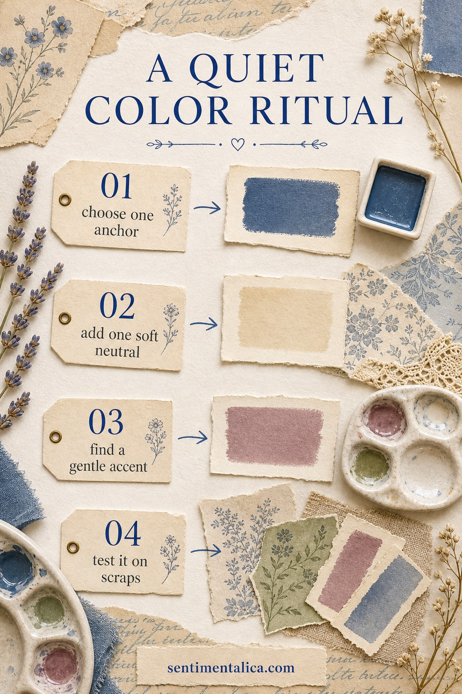
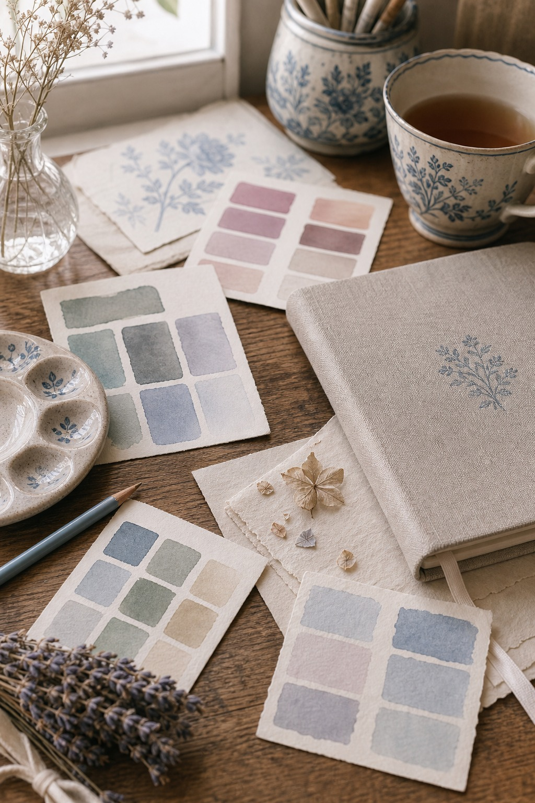

Color decisions can make a journal page feel peaceful, or they can make the whole desk feel suddenly loud. A quiet color ritual gives you a small beginning before you start gluing: one anchor, one neutral, one accent, and a test on scraps.

Choose one anchor
The anchor is the color that gives the page weight. It might be ink blue, forest green, plum, brown-black, or a deep faded teal. Choose it first, then stop looking for more dramatic colors. The anchor is allowed to be calm.

Add one soft neutral
A neutral is not filler. It is the space that lets the prettier pieces breathe. Cream, linen, parchment, pale grey-blue, or warm paper can make even a small accent feel intentional.
Find the gentle accent
The accent is the tiny spark: dusty rose, candle amber, lavender, faded red, or a little blue. It should feel like it belongs to the page, not like it arrived from another room. If it shouts, soften it.
Before you commit, test the four colors on scraps. If they look beautiful together as a tiny stack, they will probably behave on the page. If they fight on a small scrap, they will fight harder once you add lace, labels, and memories.